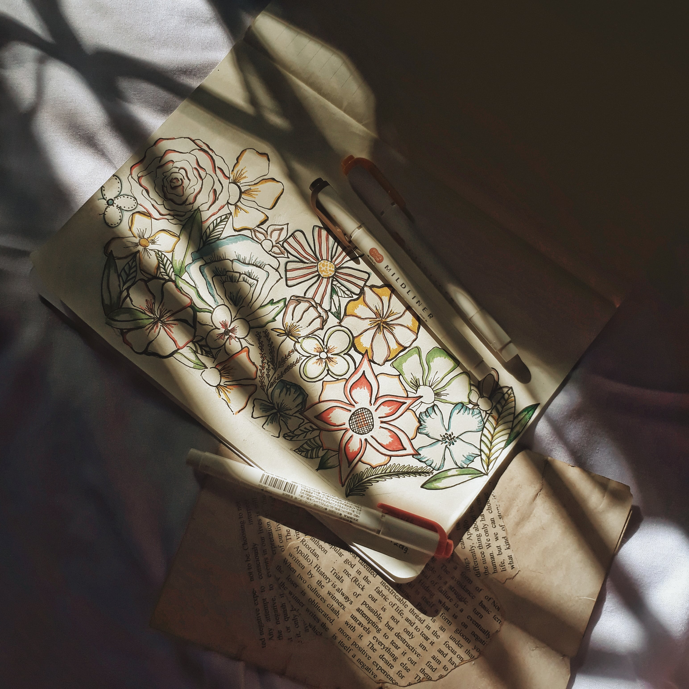
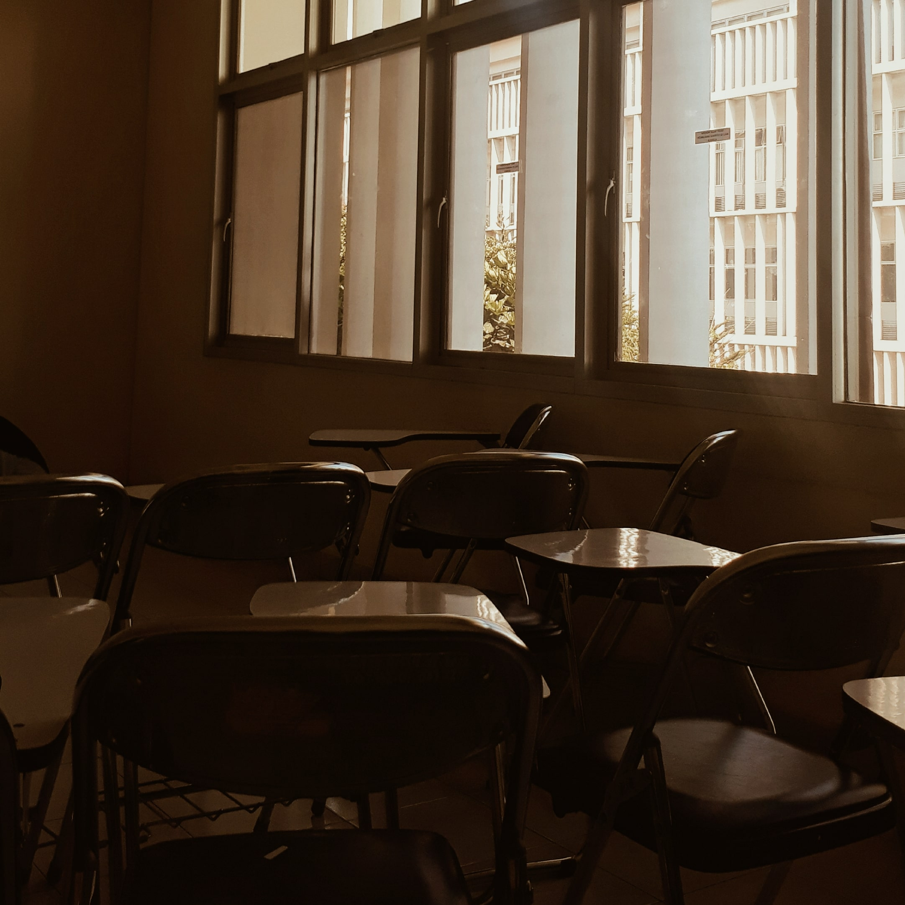

Capture your moment
With photography
Why Photography ?
Ada banyak hal menarik dari photography. Fotografi mengajarkan kita untuk lebih memperhatikan hal-hal detail yang kadang terlewatkan sebelumnya sehingga dapat membentuk pribadi yang lebih peka terhadap sekitar. Fotografi juga dapat melatih kreativitas dan mengasah kesabaran untuk mendapatkan hasil yang maksimal. Hal terpenting lainnya yaitu karena dengan fotografi kita bisa mengabadikan momen untuk diingat di kemudian hari.
Things to remember in photography
Pencahayaan
Hal yang sering dilupakan namun sebenarnya penting yaitu pencahayaan gambar. Jika tema foto tanpa menggunakan lampu tambahan sebaiknya foto di tempat yang mendapatkan cahaya matahari yang banyak.
Komposisi
Dalam fotografi biasa dikenal adanya 3 of rules. Artinya, kita bisa membagi menjadi 9 kotak bagian dan menentukan letak objek berada di kotak sebelah mana.
Fokus
Terkadang, banyak orang langsung saja memotret sebelum lensa kamera benar-benar fokus. Ini membuat hasil gambarnya menjadi blur.
Contoh

